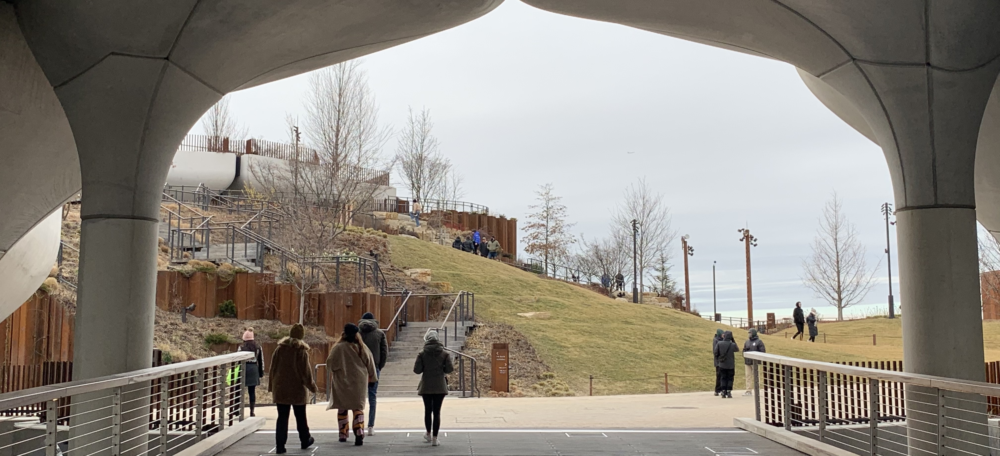
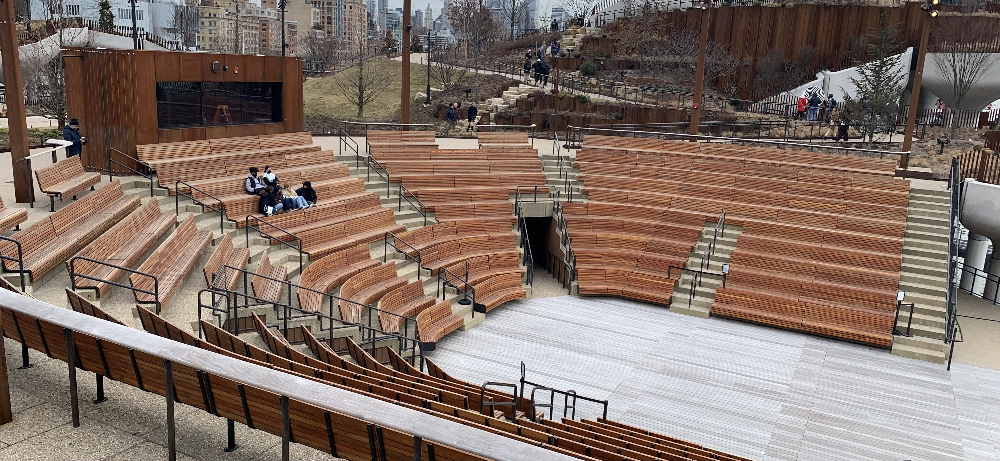
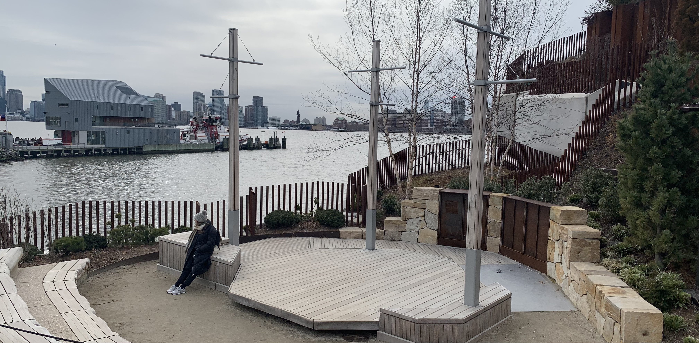
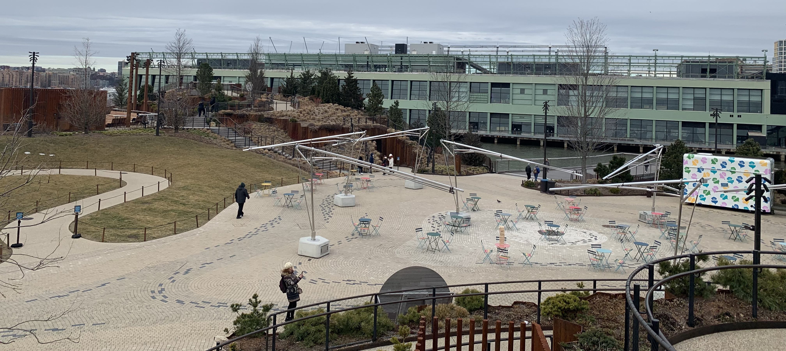

Little Island, a well known hotspot along the Hudson River for tourists attractions during the right season. A place built by concrete pillars to support the base of this massive playground/garden/theater. When I entered the place, it was absolutely freezing and there wasen't any flowers or really much to see at the place. To be fair, the season that I went in was not the best as of course nothing grows during the winter season, however the place still had a decent amount of people despite the cold. I wouldn't reconmend going to little island during the winter season like i did because it was absolutely freezing from my experience, however if you want to visit there for free and without waiting for a long line just to get into a jammed packed island once you get there, be my guess. Aside from that, there isn't much to say besides the beautiful view that the place offered for Bronx.